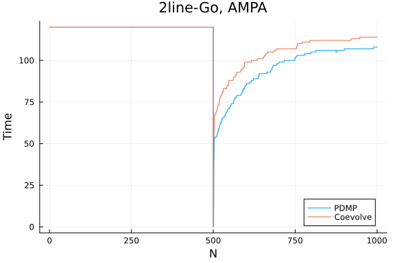

Synapse model
using Synapse
using PiecewiseDeterministicMarkovProcesses, JumpProcesses, OrdinaryDiffEq, Plots
using BenchmarkTools
fmt = :png:pngModel and example solutions
Here we implement the stochastic model of hippocampal synaptic plasticity with geometrical readount of enzyme dinamics from Rodrigues et al. [1].
Parameters and initial conditions
p_synapse = SynapseParams(t_end = 1000.0);
glu = 0.0;
events_sorted_times = [500.0];
is_pre_or_post_event = [true];
events_bap = events_sorted_times[is_pre_or_post_event.==false];
bap_by_epsp = Float64[];
nu = buildTransitionMatrix();xc0 = initial_conditions_continuous_temp(p_synapse);
xd0 = initial_conditions_discrete(p_synapse);Algorithms to benchmark
CoevolveSynced allow us to save at regular intervals. Thus, rather than saving when a jump occurs, we save at the same average frequency as obtained with PDMP.
solver = AutoTsit5(Rosenbrock23());
algorithms = [
(
label = "PDMP",
agg = nothing,
solver = (CHV(solver), CHV(solver)),
saveat = [],
),
(
label = "Coevolve",
agg = Coevolve(),
solver = (solver, solver),
saveat = 1 / p_synapse.sampling_rate,
),
];Example solutions
results = []
for algo in algorithms
push!(
results,
evolveSynapse(
xc0,
xd0,
p_synapse,
events_sorted_times,
is_pre_or_post_event,
bap_by_epsp,
[true],
nu,
algo.solver,
algo.agg;
save_positions = (false, true),
saveat = algo.saveat,
save_everystep = false,
),
)
end1.482869 seconds (69.66 k allocations: 16.717 MiB, 2.12% gc time)
2.553575 seconds (210.56 k allocations: 40.631 MiB)fig = plot(xlabel = "Voltage", ylabel = "Time");
for (i, algo) in enumerate(algorithms)
res = results[i]
plot!(res.t, res.Vsp, label = algo.label)
end
title!("Vsp")
fig = plot(xlabel = "N", ylabel = "Time");
for (i, algo) in enumerate(algorithms)
res = results[i]
plot!(res.t, res.XD[1, :], label = algo.label)
end
title!("2line-Go, AMPA")
Benchmarking perfomance
bs = Vector{BenchmarkTools.Trial}()
for algo in algorithms
push!(
bs,
@benchmark(
evolveSynapse(
xc0,
xd0,
p_synapse,
events_sorted_times,
is_pre_or_post_event,
bap_by_epsp,
[true],
nu,
$(algo).solver,
$(algo).agg;
save_positions = (false, true),
saveat = $(algo).saveat,
save_everystep = false,
),
samples = 50,
evals = 1,
seconds = 500,
)
)
end1.427276 seconds (67.93 k allocations: 16.261 MiB, 2.96% gc time)
1.519931 seconds (72.53 k allocations: 16.850 MiB)
1.724365 seconds (83.48 k allocations: 20.615 MiB)
1.665206 seconds (80.08 k allocations: 19.705 MiB, 0.71% gc time)
1.568736 seconds (76.62 k allocations: 18.959 MiB)
1.709014 seconds (80.37 k allocations: 18.673 MiB)
1.462226 seconds (70.80 k allocations: 16.721 MiB)
1.626597 seconds (78.41 k allocations: 19.243 MiB)
1.479584 seconds (71.38 k allocations: 17.066 MiB, 1.35% gc time)
1.065798 seconds (54.97 k allocations: 13.570 MiB)
1.843174 seconds (87.12 k allocations: 20.969 MiB)
1.643781 seconds (80.12 k allocations: 19.865 MiB)
1.565400 seconds (75.08 k allocations: 17.681 MiB)
1.769213 seconds (84.44 k allocations: 20.444 MiB)
1.498278 seconds (72.89 k allocations: 17.371 MiB)
Error: AssertionError: Could not compute next jump time 358.
Return code = DtLessThanMin
34.76783339868045 < 34.76783339868045,
solver = CompositeAlgorithm(; algs = (Tsit5(; stage_limiter! = trivial_lim
iter!, step_limiter! = trivial_limiter!, thread = static(false),), Rosenbro
ck23(; linsolve = nothing, precs = DEFAULT_PRECS,)), choice_function = Ordi
naryDiffEq.AutoSwitch{OrdinaryDiffEq.Tsit5{typeof(OrdinaryDiffEq.trivial_li
miter!), typeof(OrdinaryDiffEq.trivial_limiter!), Static.False}, OrdinaryDi
ffEq.Rosenbrock23{0, true, Nothing, typeof(OrdinaryDiffEq.DEFAULT_PRECS), V
al{:forward}, true, nothing}, Rational{Int64}, Int64}(Tsit5(; stage_limiter
! = trivial_limiter!, step_limiter! = trivial_limiter!, thread = static(fal
se),), Rosenbrock23(; linsolve = nothing, precs = DEFAULT_PRECS,), 10, 3, 9
//10, 9//10, 2, false, 5),). dt = 0.0labels = [a.label for a in algorithms]
medtimes = [text(string(round(median(b).time/1e9, digits=3),"s"), :center, 12) for b in bs]
relmedtimes = [median(b).time for b in bs]
relmedtimes ./= relmedtimes[1]
bar(labels, relmedtimes, markeralpha=0, series_annotation=medtimes, fmt=fmt)
title!("evolveSynapse (Median time)")Error: BoundsError: attempt to access 0-element Vector{Float64} at index [1
]medmem = [text(string(round(median(b).memory/1e6, digits=3),"Mb"), :center, 12) for b in bs]
relmedmem = Float64[median(b).memory for b in bs]
relmedmem ./= relmedmem[1]
bar(labels, relmedmem, markeralpha=0, series_annotation=medmem, fmt=fmt)
title!("evolveSynapse (Median memory)")Error: BoundsError: attempt to access 0-element Vector{Float64} at index [1
]References
[1] Y. E. Rodrigues, C. M. Tigaret, H. Marie, C. O’Donnell, and R. Veltz, "A stochastic model of hippocampal synaptic plasticity with geometrical readout of enzyme dynamics." bioRxiv, p. 2021.03.30.437703, Mar. 30, 2021. doi: 10.1101/2021.03.30.437703.